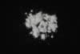

|
|
(For further information on spectroscopy, see:
http://speclab.cr.usgs.gov)
TITLE: Meionite WS701 DESCRIPT
DOCUMENTATION_FORMAT: MINERAL
SAMPLE_ID: WS701
MINERAL_TYPE: Tectosilicate
MINERAL: Meionite (Scapolite group)
FORMULA: Na4Al3Si9O24(Cl,OH)/Ca4Al6Si6O24(CO3,SO4)
FORMULA_HTML: Na4Al3Si9O24(Cl,O H)/Ca4Al6Si6O24(CO3, SO4)
COLLECTION_LOCALITY: Greenville, Quebec Canada
ORIGINAL_DONOR: Ward Science Collection
CURRENT_SAMPLE_LOCATION: USGS Denver Spectroscopy Laboratory
ULTIMATE_SAMPLE_LOCATION: USGS Denver Spectroscopy Laboratory
SAMPLE_DESCRIPTION:
Forms series with Marialite.
Metamorphic mineral with composition suggestive of feldspars.
IMAGE_OF_SAMPLE:

END_SAMPLE_DESCRIPTION.
XRD_ANALYSIS:
Scapolite + feldspar + quartz (Norma Vergo) More recent XRD reports the presence of prehnite in this sample. Prehnite may contribute many of the NIR spectral features.
END_XRD_ANALYSIS.
COMPOSITIONAL_ANALYSIS_TYPE: EMP # XRF, EM(WDS), ICP(Trace), WChem
| COMPOSITION KEYWORD |
Oxide ASCII |
Amount | Weight Percent, % |
Oxide html |
|---|---|---|---|---|
| COMPOSITION: | SiO2 | 49.6000 | wt% | SiO2 |
| COMPOSITION: | TiO2 | 0.0420 | wt% | TiO2 |
| COMPOSITION: | Al2O3 | 25.4500 | wt% | Al2O3 |
| COMPOSITION: | FeO | 0.0100 | wt% | FeO |
| COMPOSITION: | MnO | 0.0280 | wt% | MnO |
| COMPOSITION: | MgO | 0.0640 | wt% | MgO |
| COMPOSITION: | CaO | 15.4300 | wt% | CaO |
| COMPOSITION: | Na2O | 4.6460 | wt% | Na2O |
| COMPOSITION: | K2O | 0.5220 | wt% | K2O |
| COMPOSITION: | Cl | 0.3940 | wt% | Cl |
| COMPOSITION: | F | 0.0180 | wt% | F |
| COMPOSITION: | SO3 | 2.3140 | wt% | SO3 |
| COMPOSITION: | CO2 | 0.7000 | wt% | CO2 |
| COMPOSITION: | Total | 99.2180 | wt% | |
| COMPOSITION: | O=Cl,F,S | .0965 | wt% | #correction for Cl, F, S |
| COMPOSITION: | New Total | 99.1215 | wt% |
COMPOSITION_TRACE: None
COMPOSITION_DISCUSSION:
Average of 5 spots.
Wet chemical analysis indicates a wt% of 0.57 for C02.
(These values
may be suspect because acid dissolution did not remove all CO3)
1. Mol % SiO2 includes .0160 mol % SiF4.
Mol % SiO2 includes .1880 mol % SiCl2.
2. Fe oxide in analysis is total Fe+2 + Fe+3.
3. Number of tetrahedral sites per formula set at 12.
4. Number anions per formula unit = 25.04397.
Number of oxygen equivalents per formula unit = 24.98935.
5. Cation site assignments: Standard clay-mineral default with changes.
Must occupy tetrahedral sites: Si Al
To big cation sites: Ti Fe+2 Mn Mg
XMe = 63.3 Me
XMe = Ca/(Ca+Na) = 64.7 % Me
Sample: Mizzonite
END_COMPOSITION_DISCUSSION.
MICROSCOPIC_EXAMINATION:
Not done yet
END_MICROSCOPIC_EXAMINATION.
SPECTROSCOPIC_DISCUSSION:
END_SPECTROSCOPIC_DISCUSSION.
SPECTRAL_PURITY: 1b2c3c4_ # 1= 0.2-3, 2= 1.5-6, 3= 6-25, 4= 20-150 microns
| LIB_SPECTRA_HED: | where | Wave Range | Av_Rs_Pwr | Comment |
|---|---|---|---|---|
| LIB_SPECTRA: | splib04a r 2958 | 0.2-3.0µm | 200 | g.s.= |
| LIB_SPECTRA: | splib05a r 4341 | 0.2-3.0µm | 200 | g.s.= |
| LIB_SPECTRA: | splib06a r 13581 | g.s.= | ||
| LIB_SPECTRA: | splib06a r 13596 | g.s.= |
{kind=link}